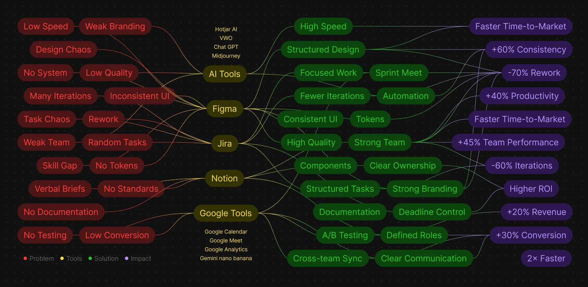

Fingular
A global neobank from Singapore for Asia's growing markets.
At Fingular I owned design end to end: product, marketing, brand strategy, systems and team — across more than fifteen brands. The company's big goal: open finance to two billion people.
Design had become the growth bottleneck: two people without process couldn't keep up with rapid scaling. Product and marketing weren't aligned, and engineering often made the calls.
I rebuilt the team — hiring every designer personally — growing it from two to eleven, shipped two design systems (product and marketing), and put process and a management layer in place. In parallel I oversaw 15+ brands for local markets.
The product reached 5.2M users, turned profitable in Malaysia within nine months, and won Best New Fintech Company APAC 2024.
- Built product and marketing design systems and introduced process.
- Personally hired every designer on the team.
- In Malaysia the product turned profitable in 9 months.
- Best New Fintech Company APAC 2024.


